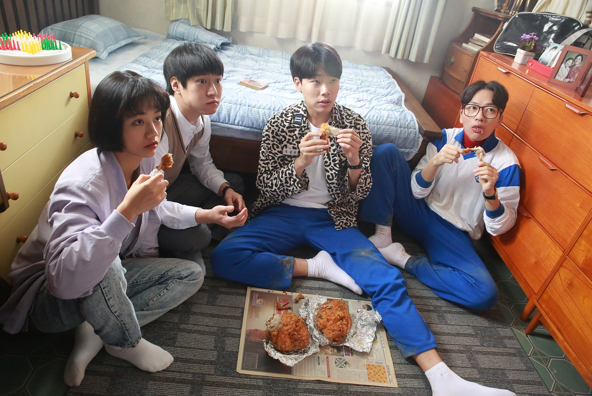
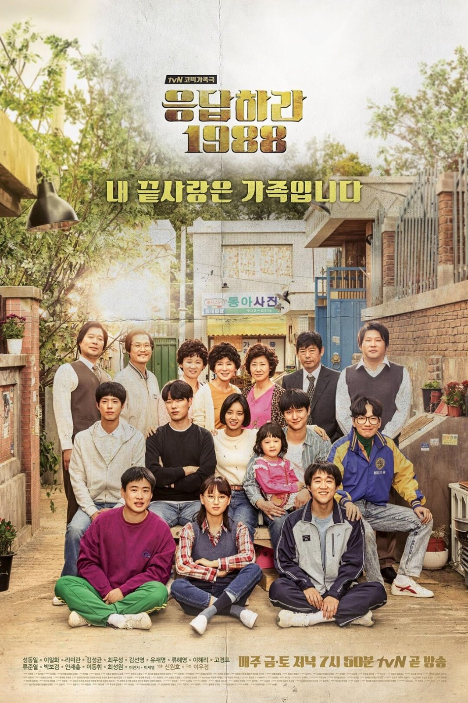
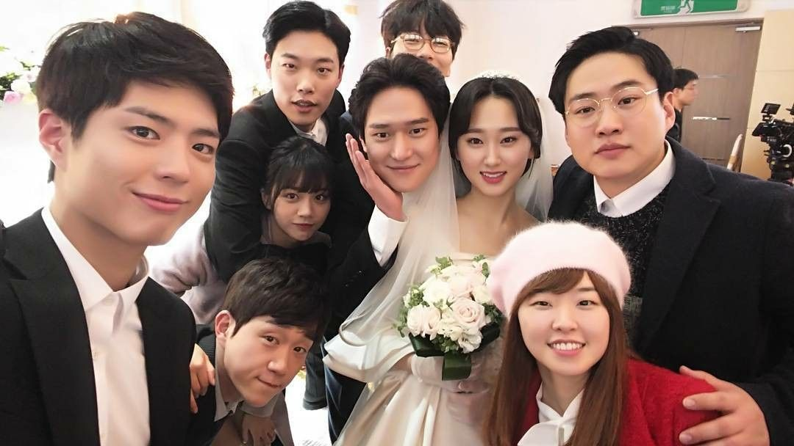

General Information
About:
- Original title: 응답하라 1988
- Romanized title: Reply 1988
- Broadcast Network: tvN
- Broadcast Period: 11-06-2015 to 01-16-2016
- Rating: PG-13
Main Cast:
- Hyeri as Sung Deok Sun
The middle child of her family, she is infamously ranked 999th in school and is the only girl in their group of five neighborhood friends.
- Park Bo-gum as Choi Taek
A genius Go player amongst his neighborhood friends who is mostly quiet and struggles with simple day-to-day tasks.
- Ryu Jun-yeol as Kim Jung-hwan
Stoic and sarcastic, is smart and loves soccer.
- Go Kyung-pyo as Sung Sun-woo
A student council president, caring brother and dependable son to his family.
- Lee Dong-hwi as Ryu Dong-ryong
Loves dancing and singing, he is wise beyond his age.
Plot Overview
Times may have been a little simpler, less technological, but still just as challenging to get through a typical day of life in the late 1980s. Five childhood friends, who all live in the same Ssangmundong neighborhood of Seoul, lean on each other to survive their challenging teen years and set a path for their futures. Sung Deok Sun (Hyeri) struggles for attention as the middle child in her poor family while also carrying the burden of her 989th ranking in school. Kim Jung Hwan (Ryu Jun Yeol) only has a one-track mind for soccer, even after his family becomes rich overnight. Sung Sun Woo (Ko Gyung Pyo) is the perfect student, student council president and a caring and dependable son in his family. Ryu Dong Ryong (Lee Dong Hwi) is a geek who knows more about girls and life than the rest of his friends, but his poor academic score prevents him from being able to go to college. Choi Taek (Park Bo Gum) is a genius baduk player who dropped out of school to go professional.
As the group of friends get into and out of mischief around the neighborhood, what experiences from these memorable times together will they carry with them into their future lives? “Reply 1988” is a 2015-2016 South Korean drama series directed by Shin Won Ho. The series is inspired by the drama “Three Families Under One Roof,” which originally aired from 1986 to 1994. It is the third series of the nostalgia-themed “Reply” dramas that include “Reply 1997” (2012) and “Reply 1994” (2013), but the characters and stories are not related to the previous series.
Review
@hashir247
"What can I say? An ABSOLUTE MASTERPIECE! The bond between the friends and the whole cast is truly beautiful. The casting, directing, acting, and writing is so well done, that you want to live in this fictional world with these characters. This drama just gives a warm feeling like no other, it will make you miss the friends you never had. It will teach you about life, friendship, and love. Even though the episodes are longer than your typical K-drama, you want them to last even longer."
@gon_
"The best K-drama I have EVER seen. I've watched it twice now and that only happens for things that I looooove. Every episode had me totally captivated. The love between the families and friends in this show was so touching, it is the most genuine Korean drama I've ever seen - it shows what REAL life is like, not just the same old chaebols with fancy cars in penthouse apartments you see in every drama these days."